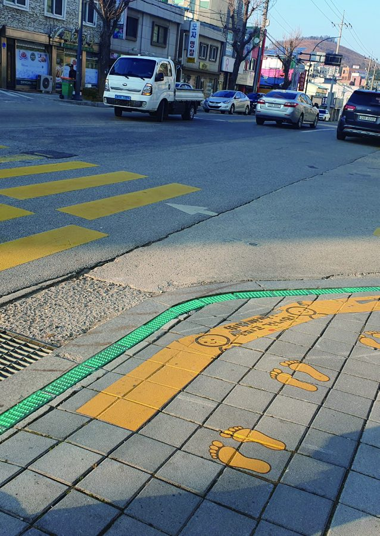
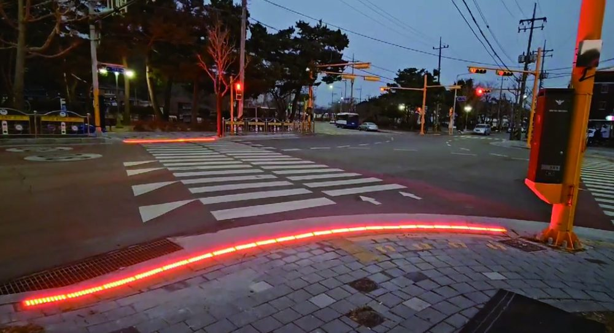
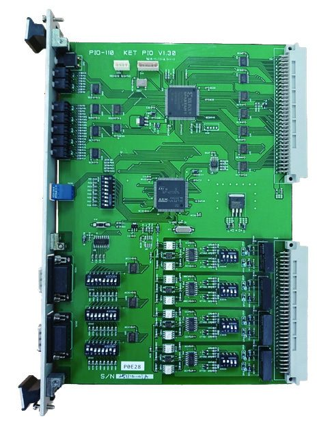

The EDBL-200 system links with existing pedestrian signals to display the signal on the ground. It prevents accidents for pedestrians walking while looking at their smartphones.
The display, control unit and option board link with a standard traffic-signal controller to sync with the pedestrian signal.

| Input Voltage | DC 24V |
|---|---|
| Power | 3.8W at 25℃ (dimming) · 0–100 100-step dimming control |
| Size | 300 × 100 × 60mm |
| Installation | Embedded in the ground (sidewalk) at the crosswalk start, between the curb and braille block |
| Procurement No. | 26109111 (incl. on-site installation) |

| Communication | Receives pedestrian-signal data from the option board via RS485 |
|---|---|
| Size | 250 × 350 × 100mm |
| Material | STS304 |

| Function | Installed in a standard traffic-signal controller to relay the pedestrian signal to the control unit |
|---|
Install the option board in the existing traffic-signal controller.
Sends pedestrian-signal data to the control unit via RS485.
Uses the received signal to control the ground display.
Lights in sync with green and turns off on red to guide pedestrians.